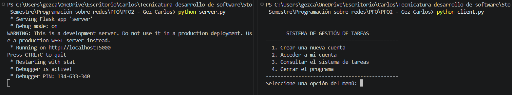
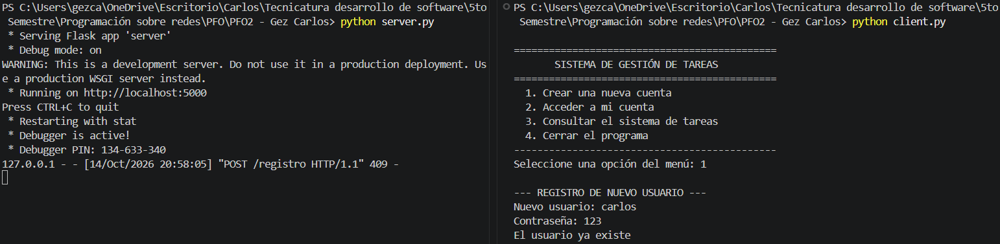
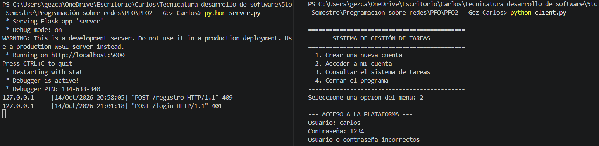
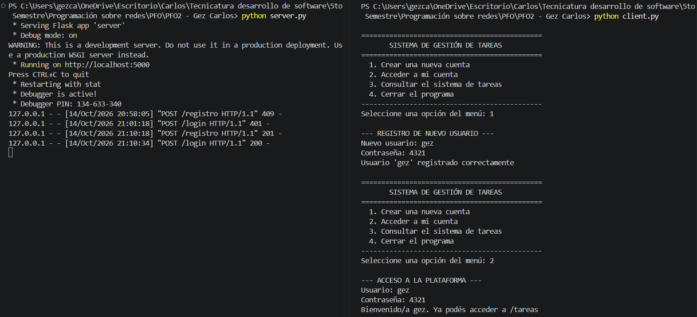
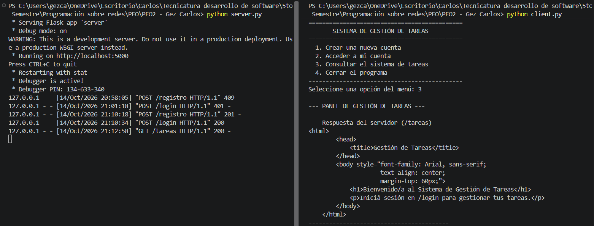
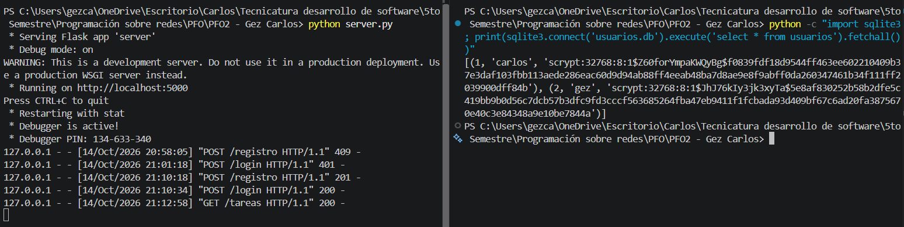
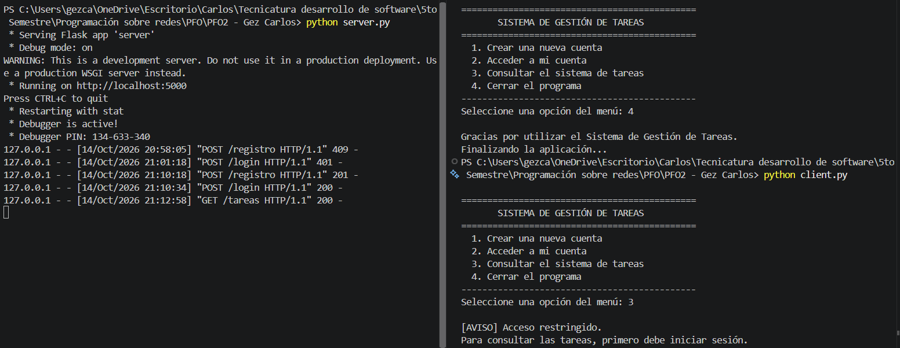
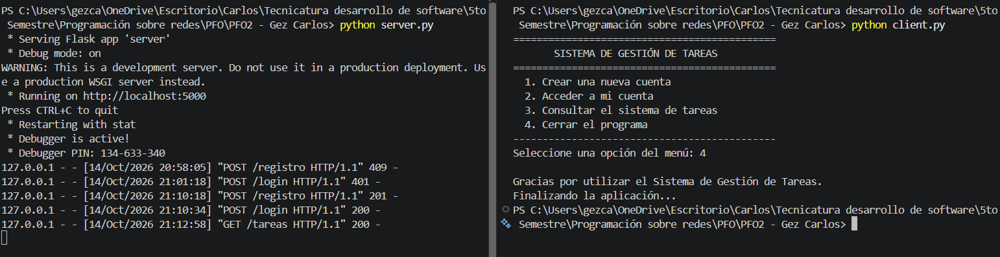

/registroCrea un usuario nuevo.
Documentación técnica del sistema construido con Flask, autenticación de usuarios y persistencia de datos en SQLite.
El proyecto implementa un servidor API REST con Flask. Permite registrar usuarios mediante contraseñas hasheadas, iniciar sesión y acceder a un endpoint de bienvenida al sistema de tareas. Los datos se almacenan en una base de datos SQLite. También incluye un cliente de consola que se comunica con la API.
/registroCrea un usuario nuevo.
/loginComprueba las credenciales de acceso.
/tareasDevuelve el HTML de bienvenida al sistema.
Instala las dependencias y abre dos terminales: una para el servidor y otra para el cliente de consola.
pip install -r requirements.txt
python server.py # Terminal 1
python client.py # Terminal 2El servidor queda escuchando en http://localhost:5000. El cliente presenta un menú con las opciones para registrarse, iniciar sesión, ver tareas y salir.
Nota: el acceso a la ruta de tareas se realiza después de iniciar sesión desde el cliente.
Las comprobaciones documentadas cubren el arranque, los casos de error, el flujo correcto de autenticación y el almacenamiento de contraseñas.
| # | Comprobación | Resultado |
|---|---|---|
| 01 | Inicio del servidor y del cliente | Correcto |
| 02 | Registro de un usuario existente | Error 409 controlado |
| 03 | Inicio de sesión con contraseña incorrecta | Error 401 controlado |
| 04 | Registro y acceso con credenciales válidas | Correcto |
| 05 | Acceso a /tareas tras iniciar sesión | Correcto |
| 06 | Verificación del hash en la base de datos | Correcto |
| 07 | Intento de ver tareas sin iniciar sesión | Acceso bloqueado por el cliente |
| 08 | Cierre ordenado del cliente | Correcto |
Se inicia Flask en una terminal y el cliente de consola en otra.

localhost:5000 y el menú interactivo de opciones del cliente.Se intenta registrar el usuario carlos, ya creado en una prueba anterior.

Se intenta acceder con el usuario carlos y una contraseña errónea.

Se registra el nuevo usuario gez y se inicia sesión con sus credenciales.

Con la sesión iniciada como gez, se selecciona «Consultar el sistema de tareas» (opción 3) en el cliente.

GET /tareas con código de estado HTTP 200.Se consulta la tabla usuarios de usuarios.db desde la consola.

carlos y gez tienen hashes scrypt únicos generados en contrasena_hash, asegurando que ninguna contraseña se almacene en texto plano.Se reinicia el cliente y se intenta consultar las tareas sin haber iniciado sesión previamente.

Se selecciona la opción «Cerrar el programa» (opción 4).

Guardar las contraseñas directamente en una base de datos puede suponer un riesgo si alguien consigue acceder a ella sin permiso. Para reducir este problema, se utiliza el hash, un proceso que convierte la contraseña en una cadena de caracteres que no permite recuperar directamente el valor original.
De esta manera, la base de datos almacena el resultado del hash en lugar de la contraseña escrita por el usuario. Cuando alguien intenta iniciar sesión, el sistema utiliza la función check_password_hash para verificar si la contraseña introducida coincide con la almacenada, sin tener que descifrarla.
SQLite permite gestionar los datos sin necesidad de poner en marcha un servidor de base de datos independiente. Toda la información se guarda en un archivo, en este caso usuarios.db, al que se puede acceder desde Python utilizando la biblioteca sqlite3, que viene incluida con el lenguaje.
Esta solución resulta práctica para un proyecto de tamaño reducido, ya que evita configuraciones adicionales y facilita la realización de pruebas durante el desarrollo. Además, proporciona las funcionalidades y el rendimiento necesarios para almacenar y consultar los usuarios de la aplicación.
El código fuente y los archivos necesarios para ejecutar la aplicación están disponibles en el repositorio.